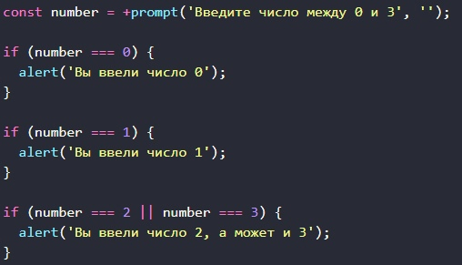

Напишите цикл, который предлагает prompt ввести число, большее 100. Если посетитель ввёл другое число – попросить ввести ещё раз, и так далее. Цикл должен спрашивать число пока либо посетитель не введёт число, большее 100, либо не нажмёт кнопку Отмена (ESC). Предполагается, что посетитель вводит только числа. Предусматривать обработку нечисловых строк в этой задаче необязательно.
Перепишите код с использованием одной конструкции switch:
